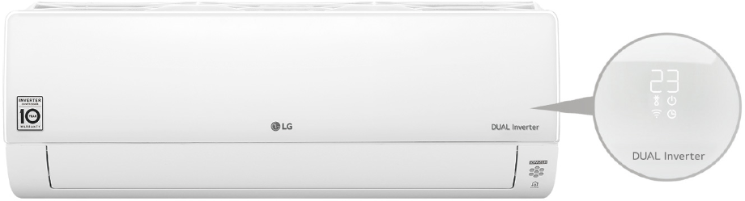
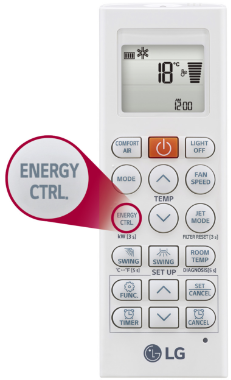

		<div class="row text-center text-lg-left ventanas" style="background-color: #fff;  ">
			
			<div class="col-lg-9 py-lg-6 py-4 px-lg-5">
				<div></div>
				<div class="mt-lg-4 mb-lg-3 my-4"><h2 class="titulov">MONITOR DE ENERGÍA</h2></div>
				<div class="row">
					<div class="col-lg-8"><div class="texto">Con presionar un botón en el control remoto, el tablero LCD del equipo muestra el consumo actual y la cantidad total utilizada, haciendo a   los usuarios conscientes de reducir su consumo energético.</div>
				</div>
				</div>
				<div class="pt-lg-5 pt-4"></div>
			</div>
			<div class="col-lg-3 pt-lg-6 py-4 pr-lg-5 pl-lg-0">
				<div></div>
			</div>
			
		</div>